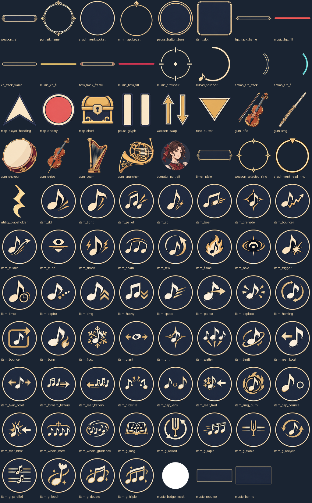

<!doctype html><html lang="zh-CN"><meta charset="utf-8"><meta name="viewport" content="width=device-width"><title>音律 HUD · 02 赛璐璐</title><style>body{margin:0;background:#111a29;color:#f4deba;font:16px/1.7 system-ui}main{max-width:1500px;margin:auto;padding:32px}h1{font-size:30px}p{color:#c1cbd5}nav{display:flex;gap:16px;flex-wrap:wrap}a{color:#ead29c}figure{margin:36px 0;padding:20px;border:1px solid #5e5546;border-radius:12px;background:#182336}img{width:100%;height:auto;display:block}figcaption{margin-bottom:14px;font-size:21px}small{color:#91a2b8}</style><main><h1>音律主题 HUD · 02 复古动漫赛璐璐</h1><p>生成与替换完成。暖金、象牙白、午夜蓝；六种乐器与 51 种音符配件。保留原布局与交互。</p><p>仅 HUD 换肤，场景和第一人称模型尚未迁移；白色胶囊为工程已有的枪模回退。</p><nav><a href="#s0">当前 HUD · 1920×1080</a><a href="#s1">全部加工素材 · 87 张</a><a href="#s2">换弹／调律</a><a href="#s3">Boss 入场</a><a href="#s4">1280×720</a><a href="#s5">2560×1080</a></nav><figure id="s0"><figcaption>当前 HUD · 1920×1080</figcaption><a href="../../Shots/hud-music-final-gameplay-1920.png"></a></figure><figure id="s1"><figcaption>全部加工素材 · 87 张</figcaption><a href="processed-contact.png"></a></figure><figure id="s2"><figcaption>换弹／调律</figcaption><a href="../../Shots/hud-music-final-reload.png"></a></figure><figure id="s3"><figcaption>Boss 入场</figcaption><a href="../../Shots/hud-music-final-boss.png"></a></figure><figure id="s4"><figcaption>1280×720</figcaption><a href="../../Shots/hud-music-final-gameplay-1280.png"></a></figure><figure id="s5"><figcaption>2560×1080</figcaption><a href="../../Shots/hud-music-final-gameplay-wide.png"></a></figure><small>HUD Play 73/73 · 规则 321/321 · 100 布局节点不变 · 5 节点按新素材适配 · 原始图集和回执保留</small></main></html>